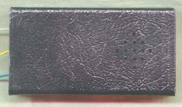
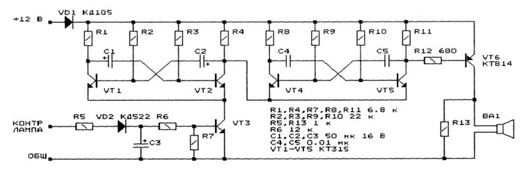
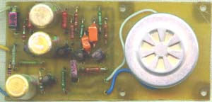
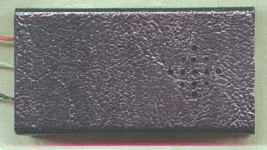
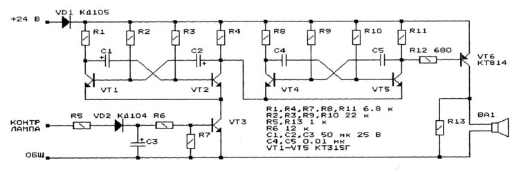
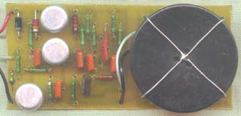

Звуковой сигнализатор поворотов для автомобиля
Звуковой сигнализатор поворотов предназначен для подачи звукового сигнала в кабине автомобиля во время работы указателя поворотов. Может также использоваться для звуковой индикации включенного состояния ручного тормоза. Звуковые сигнализаторы поворотов разработаны двух типов: с напряжением питания 12 и 24 вольта.
Звуковой сигнализатор поворотов для автомобиля с напряжением бортовой сети 12 вольт

Рис. 1. Внешний вид звукового сигнализатора поворотов с напряжением питания 12 В: размеры 100 х 50 х 25 мм3.
Схема принципиальная звукового сигнализатора поворотов с напряжением питания 12 вольт показана на рис. 2.

Рис. 2. Схема принципиальная звукового сигнализатора поворотов с напряжением питания 12 В.
Звуковой сигнализатор поворотов представляет собой генератор пачек импульсов на двух мультивибраторах: низкочастотном (около 1 Гц) на транзисторах VT1VT2 и высокочастотном (около 1000 Гц) - VT4VT5. Транзистор VT6 является усилителем мощности, в качестве нагрузки которого используется низкоомный телефонный капсюль или пьезоэлектрический излучатель. Узел задержки VT3C3R6R7 служит для включения устройства при работе контрольной лампы указателя поворотов. Диоды VD1, VD2 защищают устройство при неправильном подключении. Сигнализатор подключается к бортовой сети автомобиля и к контрольной лампе указателя поворотов. При подаче напряжения на контрольную лампу во время работы указателя поворотов сигнализатор включается и начинает излучать прерывистый звуковой сигнал. Внешний вид печатной платы сигнализатора показан на рис. 3.

Рис. 3. Печатная плата звукового сигнализатора поворотов с напряжением питания 12 В.
Звуковой сигнализатор поворотов для автомобиля с напряжением бортовой сети 24 вольт

Рис. 4. Внешний вид звукового сигнализатора поворотов с напряжением питания 24 В: размеры 100 х 50 х 25 мм3.
Схема принципиальная звукового сигнализатора поворотов с напряжением питания 24 вольт показана на рис. 5, а внешний вид печатной платы - на рис. 6.

Рис. 5. Схема принципиальная звукового сигнализатора поворотов с напряжением питания 24 В.

Рис. 6. Печатная плата звукового сигнализатора поворотов с напряжением питания 24 В.
Схема и конструкция звукового сигнализатора поворотов с напряжением питания 24 В аналогичны схеме и конструкции сигнализатора с напряжением питания 12 В, за исключением того, что в нем применены детали с большим предельно допустимым напряжением, поэтому он может применяться также и на автомобилях с напряжением бортовой сети 12 вольт.
01.05.2004
17.04.2006
17.06.2010
Альтернативные источники
энергии
Компьютеры и
Интернет
Магнитные поля
Механотронные системы
Перспективные
разработки
Электроника и технология